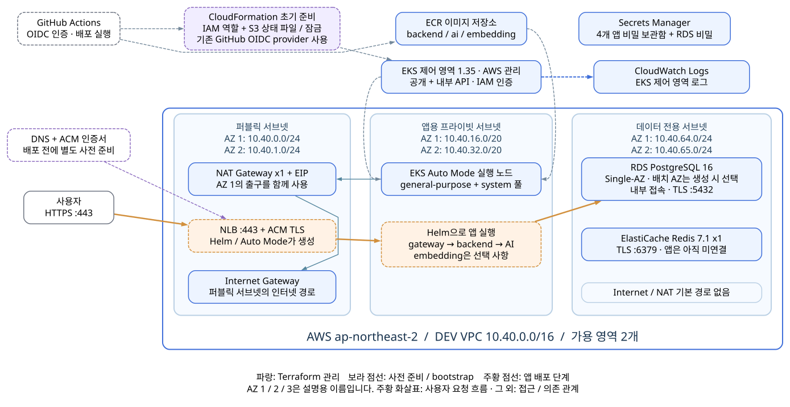

TRIPPILOT / AWS DEPLOYMENT
AWS 배포,
그림부터 코드까지
Terraform으로 AWS를 준비하고,
GitHub Actions로 앱을 배포하는 과정을 함께 읽습니다.
01 / 먼저 배포할 AWS 전체 모습
TripPilot이 올라갈 AWS 구성도

01 / 사용자 요청 따라가기
여행 일정 요청은 어디로 갈까요?
- 01모바일 앱API 도메인으로
HTTPS 요청을 보냅니다. - 02NLB + gatewayNLB가 TLS를 처리하고,
nginx가 API 요청을 전달합니다. - 03backend + AIbackend가 업무를 처리하고
필요할 때 AI를 호출합니다. - 04PostgreSQLbackend가 앱 데이터를
저장하고 읽습니다.
Redis는 인프라에 준비되어 있지만 현재 backend 캐시 어댑터는 아직 없습니다. AI의 pgvector 검색과 임베딩 서비스는 배포 옵션을 켰을 때 연결됩니다.
외부에서 들어오는 입구는 NLB입니다. AI와 DB는 내부에서 연결합니다.
01 / 네트워크 읽기
서브넷을 세 구역으로 나눈 이유
VPC는 서비스 전용 네트워크, 서브넷은 그 안을 나눈 작은 구역입니다.
| 구역 | 배치하는 것 | 인터넷과의 관계 |
|---|---|---|
| Public | NAT, 앱 배포 후 NLB | Internet Gateway로 나가는 경로 |
| Private compute | EKS 노드와 앱 Pod | 외부 통신은 NAT를 통해 나감 |
| Isolated data | RDS PostgreSQL, Redis | 인터넷/NAT 기본 경로 없음 |
NAT는 내부 앱이 밖으로 요청을 보낼 때 쓰는 출구입니다.
코드: network.tf, data.tf
01 / DEV와 PRD
같은 설계에, 다른 규모를 넣습니다
| 설정 | DEV · 개발 확인 | PRD · 운영 |
|---|---|---|
| VPC 주소 | 10.40.0.0/16 | 10.50.0.0/16 |
| 가용 영역 / NAT | 2 AZ / 공유 NAT 1개 | 3 AZ / AZ마다 NAT 1개 |
| PostgreSQL | 단일 AZ / 백업 1일 | Multi-AZ / 백업 14일 |
| Redis | 노드 1개 | 노드 3개 / 자동 장애 조치 |
| backend · AI | 각 Pod 1개 | 각 Pod 2개 |
| EKS · RDS 삭제 보호 | 꺼짐 | 켜짐 |
01 / 도구별 담당
한 번의 배포에 여러 도구가 참여합니다
| 도구 | 쉽게 말하면 | 이 프로젝트에서 하는 일 |
|---|---|---|
| CloudFormation bootstrap | 작업 전 준비 | S3 state 버킷과 IAM 역할 생성 |
| Terraform | AWS 설계도 | VPC, EKS, RDS, Redis, ECR 등 생성 |
| Docker + ECR | 앱 포장과 보관 | 컨테이너 이미지를 빌드하고 저장 |
| Helm + EKS | 앱 설치와 실행 | Pod와 Service 배포, Auto Mode가 NLB 생성 |
| GitHub Actions | 순서가 적힌 작업표 | 위 작업들을 정해진 순서로 실행 |
도메인 DNS와 ACM 인증서는 별도로 준비합니다.
02 / TERRAFORM
원하는 AWS 모습을 코드로 적기
콘솔에서 클릭했던 설정을 파일에 적어 두면
동료와 검토하고, 다른 환경에도 다시 적용할 수 있습니다.
- 01코드어떤 자원이 필요한가?
- 02State어떤 AWS 자원을
관리하고 있는가? - 03Plan현재와 비교하면
무엇이 달라지는가? - 04Apply그 변경을 실제로 적용
“VPC를 하나 클릭해서 만들어라”보다 “이 VPC가 있어야 한다”에 가깝습니다.
02 / STEP 1 · 파일 찾기
처음에는 이 파일들만 따라갑니다
stack/
versions.tf # 도구 설정
variables.tf # 입력값
network.tf # 네트워크
eks.tf # 앱 실행 공간
data.tf # DB와 캐시
registry-secrets.tf
outputs.tf # 다음 단계에 전달
environments/
dev.tfvars
prd.tfvars- 환경값부터 읽기dev.tfvars에서 크기와 개수를 확인합니다.
- 그림과 파일 연결하기VPC는 network.tf, EKS는 eks.tf에 있습니다.
- 출력 찾기outputs.tf에서 배포에 쓸 이름·주소를 봅니다.
같은 폴더의 .tf 파일은 함께 읽습니다. 파일 이름순으로 실행하지 않습니다.
02 / STEP 2 · 코드 한 블록 읽기
이 여섯 줄이 VPC 하나를 정의합니다
resource "aws_vpc" "this" {
cidr_block = var.vpc_cidr
enable_dns_hostnames = true
enable_dns_support = true
tags = { Name = local.name }
}- resource관리할 자원을 선언합니다.
- aws_vpc / this자원 종류 / 코드 안에서 부르는 이름
- var.vpc_cidr환경에서 받은 네트워크 주소 범위
- tags.NameAWS에 표시할 이름 태그
“이 주소 범위와 이름을 가진 VPC가 필요하다”라고 읽으면 됩니다.
코드: network.tf · 실제 내용의 공백만 정리
02 / STEP 3 · 값의 흐름
dev라는 값이 이름으로 바뀌는 과정
# dev.tfvars: 입력할 값
environment = "dev"
# network.tf: 계산한 이름
locals {
name = "trippilot-${var.environment}"
}
# eks.tf: 이름을 사용
name = local.name- Variable · 입력 자리variables.tf가 environment를 받도록 선언합니다.
- tfvars · 실제 입력값DEV 실행에서는 dev.tfvars를 선택합니다.
- Local · 계산한 값local.name은 trippilot-dev가 됩니다.
- Output · 전달할 결과EKS 이름을 Actions의 다음 단계가 받습니다.
02 / STEP 4 · 연결과 순서
“이 VPC 안에 서브넷을 만든다”
resource "aws_subnet" "private" {
count = var.availability_zone_count
vpc_id = aws_vpc.this.id
availability_zone = local.azs[count.index]
# CIDR과 태그 등 생략
}- 참조가 연결을 만듭니다서브넷은 VPC의 ID가 필요합니다.
- 연결이 순서를 만듭니다Terraform은 VPC를 준비한 뒤 서브넷을 만듭니다.
- graph로 확인합니다코드의 참조 관계를 DOT 그래프로 출력할 수 있습니다.
코드 속 ID 참조가 AWS 구성도의 연결선이 되는 단서입니다.
실제 terraform graph 결과 열기 · 의존성 화살표는 요청 트래픽의 방향과 다릅니다.
02 / STEP 5 · 반복 만들기
개수로 만들거나, 이름별로 만듭니다
count · 개수만큼
# 서브넷 리소스 내부
count = var.availability_zone_countDEV 값이 2이면 같은 종류의 서브넷을 두 개 만듭니다.
주소 예: aws_subnet.private[0]
for_each · 이름마다
# ECR 리소스 내부
for_each = toset([
"backend", "ai", "embedding"
])세 이름마다 ECR 이미지 저장소를 하나씩 만듭니다.
주소 예: aws_ecr_repository.app["ai"]
설정을 복사하지 않고, 환경값과 목록으로 반복을 표현합니다.
02 / STEP 6 · 연결 담당과 기록 담당
Provider와 State의 역할
Provider · AWS와 대화
provider "aws" {
region = var.aws_region
# 계정 검사·태그 생략
}AWS API를 통해 자원을 조회하고 변경합니다.
State · 자원 연결 기록
# terraform 블록 내부
backend "s3" {
encrypt = true
use_lockfile = true
}aws_vpc.this가 실제 어떤 VPC인지 기억합니다.
DEV와 PRD는 서로 다른 S3 버킷을 사용합니다. 각 버킷 안의 파일 이름은 terraform.tfstate로 같습니다.
코드: versions.tf · S3 backend 공식 문서
02 / STEP 7 · 명령 읽기
준비하고, 검사하고, 비교한 뒤 적용
| 명령 | 쉬운 설명 | 이때 확인할 것 |
|---|---|---|
init | 실행 준비 | Provider 설치와 backend 연결 |
validate | 코드 검사 | 문법과 구성에 모순이 없는지 |
plan | 변경 미리보기 | 만들 것, 바꿀 것, 지울 것 |
apply | 실제 변경 | 대상 환경과 계획이 맞는지 |
이 프로젝트의 AWS plan은 AWS 조회와 원격 state 잠금을 사용합니다. 자격증명 없는 로컬 검사와는 다릅니다.
validate 성공은 AWS 배포 성공을 보장하지 않습니다.
02 / STEP 8 · PLAN 읽기
더하기보다, 삭제와 교체를 먼저 확인
+ aws_vpc.this
~ aws_db_instance.postgres
-/+ aws_subnet.private[0]
Plan: 2 to add,
1 to change,
1 to destroy.- + 생성새 자원을 만듭니다.
- ~ 수정기존 자원의 설정을 바꿉니다.
- - 삭제 / -/+ 교체기존 자원이 사라지거나 새로 만들어집니다.
줄 한 개를 바꿔도 운영 영향은 클 수 있습니다. 이름과 변경 속성까지 읽습니다.
02 / 실습 A · AWS 변경 없이 검사
먼저 내 컴퓨터에서 코드를 확인합니다
저장소 루트에서 실행 · workflow 기준 Terraform CLI 1.13.5terraform -chdir=infra/terraform/stack fmt -check -recursive ..
terraform -chdir=infra/terraform/stack init -backend=false -lockfile=readonly
terraform -chdir=infra/terraform/stack validate
terraform -chdir=infra/terraform/stack test- 기대 결과형식 검사, 구성 검사, DEV·PRD 설계 조건 테스트가 통과합니다.
- 왜 AWS 계정 없이 되나요?테스트가 mock provider를 사용하고 S3 backend 연결을 끕니다.
코드: environments.tftest.hcl · 첫 provider 다운로드에는 인터넷이 필요합니다.
02 / 잠깐 확인
PRD의 AZ를 2개로 바꾸면?
prd.tfvars에서availability_zone_count = 2로 바꿨습니다.
그대로 배포될까요?
답과 이유 보기
변수 검증에서 거부합니다. 이 프로젝트는 PRD에 3 AZ를 요구합니다. 타입이 숫자여도 허용 조건에 맞지 않으면 실패합니다.
타입은 값의 모양을, validation은 허용할 조건을 검사합니다.
코드: variables.tf
03 / GITHUB ACTIONS
배포 순서를 실행 가능한 작업표로
사람이 매번 명령을 기억하지 않아도
같은 검사와 배포 순서를 실행하도록 YAML에 적습니다.
- EVENT언제 시작?이 프로젝트는
Run workflow 클릭 - WORKFLOW어떤 작업표?aws-deploy.yml
전체 실행 정의 - JOB어떤 작업 묶음?validate와 deploy
각각 runner에서 실행 - STEP무엇을 실행?checkout, 검사,
plan, apply 등
03 / STEP 1 · 두 JOB 읽기
검사가 통과해야 deploy가 시작됩니다
on:
workflow_dispatch:
# 실행 입력 생략
jobs:
validate:
runs-on: ubuntu-latest
# 검사 steps 생략
deploy:
needs: validate
environment: ${{ inputs.environment }}
# 배포 steps 생략- validateTerraform·배포 도구·Helm 구성을 검사합니다.
- needs: validate검사 job이 성공할 때까지 기다립니다.
- environmentdev 또는 prd의 변수와 보호 규칙을 사용합니다.
코드: aws-deploy.yml
03 / STEP 2 · STEP 읽기
uses는 도구 사용, run은 명령 실행
steps:
- uses: actions/checkout@v4
# 중간 setup step 생략
- name: Validate Terraform offline
working-directory: infra/terraform/stack
run: |
terraform fmt -check -recursive ..
terraform init -backend=false -lockfile=readonly
terraform validate
terraform test- checkout선택한 커밋의 저장소 파일을 가져옵니다.
- working-directory명령을 실행할 폴더를 지정합니다.
- run: |여러 줄의 셸 명령을 순서대로 실행합니다.
03 / STEP 3 · 실행 입력
Run workflow에서 네 가지를 고릅니다
| 입력 | 값 | 의미 |
|---|---|---|
| environment | dev / prd | 어느 환경에 실행할지 |
| mode | plan / apply | 미리보기만 할지, 실제 변경할지 |
| deploy_application | true / false | apply 후 앱도 빌드·배포할지 |
| embedding_enabled | true / false | 선택형 임베딩 서비스도 배포할지 |
첫 확인: dev + plan
인프라 생성: dev + apply + deploy_application=false
plan을 고르면 앱 배포 옵션을 켜도 앱은 배포하지 않습니다.
03 / STEP 4 · 자동 검사와 수동 배포
CI 성공 후 AWS 배포는 직접 시작합니다
기존 backend / AI CI
- push·PR 등으로 코드 검사
- develop push에서는 GHCR 발행
- 개발 중 문제를 발견하는 경로
AWS 배포 workflow
- Run workflow로 수동 시작
- 선택한 소스를 다시 빌드해 ECR 발행
- AWS 인프라와 앱을 변경하는 경로
현재 AWS workflow에는 push·PR·schedule·다른 CI 완료를 통한 자동 배포 트리거가 없습니다.
03 / STEP 5 · AWS 인증
OIDC로 잠시 사용할 권한을 받습니다
- GitHub가 실행의 신원을 증명어느 저장소의 어느 Environment에서 실행하는지 담은 토큰을 발급합니다.
- AWS가 신뢰 조건을 확인허용된 저장소와 환경인지 IAM 역할의 정책으로 검사합니다.
- 짧은 시간 유효한 AWS 자격증명 발급이 권한으로 Terraform·ECR·EKS 작업을 실행합니다.
이 workflow는 GitHub에 장기 AWS 액세스 키를 저장하지 않습니다.
04 / STEP 1 · 처음 한 번 준비
Terraform보다 먼저 필요한 것
State를 저장할 S3와 AWS 작업 권한이 있어야 Terraform을 시작할 수 있습니다.
- AWS 관리자GitHub OIDC provider와 환경별 bootstrap 역할을 준비합니다.
- AWS bootstrap (manual) 실행CloudFormation이 S3 state, 배포 역할, EKS cluster/node 역할을 만듭니다.
- 출력값 등록DeploymentRoleArn을 같은 GitHub Environment의 AWS_ROLE_ARN에 넣습니다.
실행 안내: AWS 초기 설정 가이드 · 코드: aws-bootstrap.yml
04 / STEP 2 · GITHUB 설정
dev와 prd의 설정을 따로 보관합니다
| Environment Variable | 무엇을 넣나요? |
|---|---|
AWS_ACCOUNT_ID | 대상 AWS 계정의 12자리 ID |
AWS_REGION | 리전. 생략하면 ap-northeast-2 |
AWS_BOOTSTRAP_ROLE_ARN | 최초 bootstrap에 사용할 기존 역할 |
AWS_ROLE_ARN | bootstrap 출력의 일반 배포 역할 |
ACM_CERTIFICATE_ARN | 앱 배포 전에 검증 완료한 인증서 |
API_HOSTNAME | 예: api-dev.example.com |
기본 배포 브랜치는 DEV develop, PRD main입니다. Environment의 배포 브랜치 제한도 같은 값으로 설정합니다.
04 / STEP 3 · DEV 미리보기
첫 실행은 dev + plan
- Actions에서 AWS / Terraform and EKS deploy 선택배포할 develop 브랜치를 선택합니다.
- environment=dev, mode=plan으로 실행validate 통과 후 AWS 인증과 S3 state 연결을 진행합니다.
- Terraform plan 로그 확인리전·환경 이름, 추가·수정·삭제 자원을 읽습니다.
계획 파일의 범위: 이후 apply를 새로 실행하면 그 실행 안에서 새 plan을 만듭니다. 이전 plan 실행의 파일을 이어받지 않습니다.
04 / STEP 4 · AWS 공간 생성
apply로 인프라부터 준비합니다
두 번째 실행: dev / apply / deploy_application=false
이번 실행이 하는 일
- 새 plan 생성
- 같은 실행에서 저장한 plan 적용
- VPC·EKS·RDS·ECR 등 준비
완료 후 확인할 것
- 환경 이름이
trippilot-dev인지 - Secrets Manager 저장소가 생겼는지
- 앱용 ACM 인증서가
ISSUED인지
자원이 만들어지면 EKS·NAT·RDS 등의 비용이 발생합니다. 인프라만 생성한 상태에서는 앱과 NLB가 아직 없을 수 있습니다.
04 / STEP 5 · 앱 포장
코드를 이미지로 만들어 ECR에 보관
다음 실행에서 apply + deploy_application=true를 선택합니다.
- 01Terraform outputs생성된 ECR 저장소 주소와
EKS 이름을 읽습니다. - 02Docker buildbackend와 AI 코드를
컨테이너 이미지로 만듭니다. - 03ECR push환경별 저장소에
버전 태그와 함께 저장합니다. - 04Helm에 전달어떤 이미지 주소와 태그를
실행할지 지정합니다.
이미지 태그: sha-<commit>-<run_id>-<attempt>
ECR은 같은 태그의 덮어쓰기를 막습니다.
04 / STEP 6 · 비밀값과 DB 준비
앱 실행 전에 로그인 정보와 DB를 준비
- Secrets Manager 값 확인Terraform은 저장소를 만들고, 배포 도구가 값을 읽습니다.
- Kubernetes Secret으로 전달빈 저장소의 DB 암호·서비스 토큰·JWT 키는 배포 도구가 생성합니다.
- DB 초기화 Job 실행앱 계정·스키마·AI DB 등을 준비하고 임시 관리자 자격증명을 정리합니다.
외부 LLM·기상·지도 API 키는 직접 준비해야 합니다.
04 / STEP 7 · 앱 실행
Helm이 앱을 설치하고, EKS가 실행
spec:
type: LoadBalancer
loadBalancerClass: eks.amazonaws.com/nlb
# selector 등 생략
ports:
- name: https
port: 443
targetPort: http- Helm chart 적용gateway, backend, AI의 Pod·Service를 만듭니다.
- Auto Mode가 NLB 생성gateway Service와 인증서 설정을 읽습니다.
- 정상 기동 후 내부 연결 확인Helm 대기와 smoke 테스트가 진행됩니다.
04 / STEP 8 · 밖에서 접속 확인
마지막 연결은 DNS와 HTTPS
- Actions Summary의 NLB DNS 확인생성된 로드 밸런서 주소가 출력됩니다.
- API 도메인의 DNS 연결API_HOSTNAME의 CNAME을 NLB 주소로 설정합니다. Route 53 루트 도메인은 Alias를 사용합니다.
- 실제 도메인으로 HTTPS 확인DNS 해석과 인증서가 맞는지, API 요청이 성공하는지 봅니다.
curl --fail --show-error https://api-dev.example.com/healthz이 확인은 gateway 응답을 검사합니다. backend·AI 연결은 workflow의 내부 smoke 결과와 실제 API 요청도 함께 확인합니다.
04 / 개발부터 운영까지
로컬, DEV, PRD에서 확인하는 것이 다릅니다
| 단계 | 주요 확인 | 이 프로젝트의 실행 방식 |
|---|---|---|
| 로컬 kind | 내 컴퓨터에서 서비스 연결 | just doctor, just up, just health |
| AWS DEV | 실제 AWS 권한·네트워크·TLS | develop에서 dev 수동 plan/apply |
| AWS PRD | 운영 규모·보호 설정·배포 결과 | 검토한 main에서 prd 수동 plan/apply |
현재 PRD 배포는 선택한 커밋을 다시 빌드합니다. DEV 이미지를 그대로 승격하는 구현은 없습니다.
로컬 안내: deploy/README.md · 로컬 deploy/k8s/와 AWS deploy/eks/는 별도 구성입니다.
04 / 실패한 STEP에서 시작
빨간색이 된 첫 작업부터 확인합니다
| 실패 위치 | 먼저 볼 것 |
|---|---|
| validate | Terraform 문법, 테스트 결과, Helm 환경값 |
| AWS 인증 | 선택 브랜치·Environment, 역할 ARN, OIDC 신뢰 정책 |
| init / plan | bootstrap 완료 여부, state 버킷, 계정·권한 |
| 이미지 / DB 초기화 | Docker 빌드 로그, Secret 설정, DB Job 로그 |
| Helm / 내부 smoke | Pod 상태·로그, Service 연결, 앱 환경변수 |
| 외부 HTTPS | DNS 대상, ACM 인증서, NLB 상태 |
실패한 위치를 알면 “AWS가 안 된다”를 구체적인 문제로 바꿀 수 있습니다.
04 / 복구 범위
앱 복구와 인프라 복구는 별개입니다
- Helm 배포 단계가 실패하면--atomic이 기존 release 복구를 시도합니다. 최초 설치 실패에는 설치 내용을 정리합니다.
- 그 뒤의 smoke가 실패하면배포 전체를 자동으로 되돌리는 동작은 없습니다.
- Terraform·DB·Secret이 바뀌었다면각 변경의 영향을 따로 확인하고 복구해야 합니다.
- 앱 코드만 되돌릴 때배포 브랜치에 revert commit을 반영하고 수동 배포합니다.
Git을 되돌려도 DB 데이터가 과거로 돌아가지는 않습니다.
05 / 코드에서 그림 다시 만들기
선택한 도구: Terraform graph + Graphviz
원본 graph는 자원 의존성을 보여줍니다. 첫 장의 그림은 그 코드에 근거한 학습용 배치도이며, 실제 배포 상태를 조회한 그림은 아닙니다.
05 / 오늘 배운 내용을 내 말로
이 네 가지를 설명하면 됩니다
- 사용자 요청이 DB까지 어떻게 가나요?전체 AWS 그림에서 요청 경로를 짚어 봅니다.
- Terraform과 Actions는 무엇을 나눠 하나요?설계와 실행 순서를 구분해 봅니다.
- plan과 apply는 어떻게 다른가요?새 apply 실행이 어떤 plan을 사용하는지도 설명합니다.
- DEV 성공 후 PRD는 어떻게 배포하나요?브랜치·Environment·환경값·수동 실행을 연결합니다.
핵심 답 보기
요청은 NLB, nginx, backend를 거쳐 AI·DB로 이어집니다. Terraform은 AWS 구성을 정의하고 Actions는 작업 순서를 실행합니다. plan은 변경 미리보기, apply는 같은 실행에서 저장한 계획을 적용합니다. PRD는 준비된 main과 prd 설정을 선택해 수동으로 다시 빌드·배포합니다.
05 / 다음에 다시 찾을 곳
실행할 때는 원문 가이드를 함께 봅니다
전체 그림을 보고, 코드 한 블록을 읽고, 실행 로그에서 그 단계를 찾습니다.